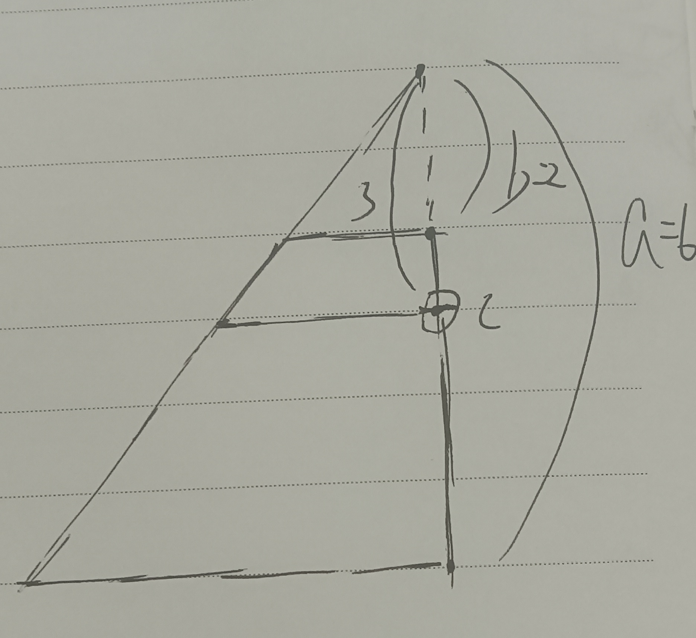
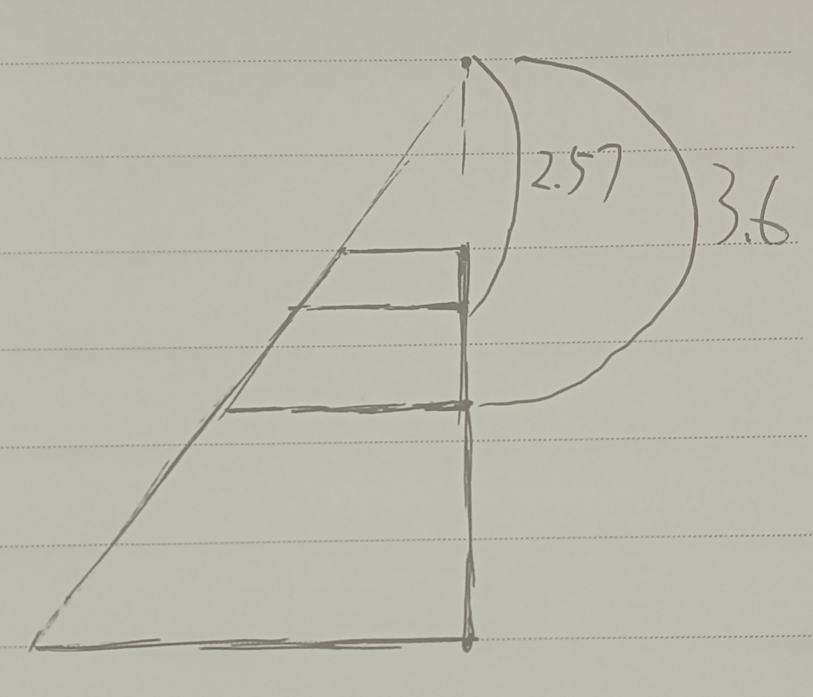
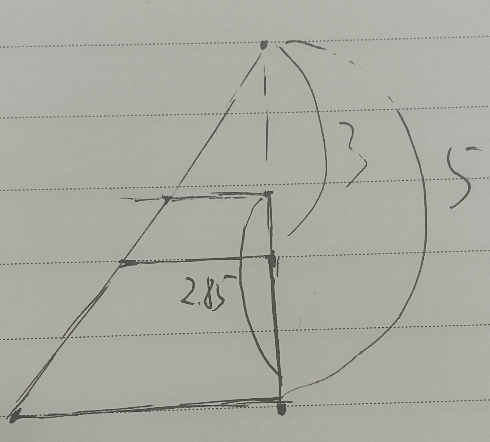
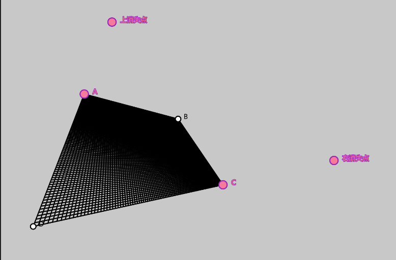
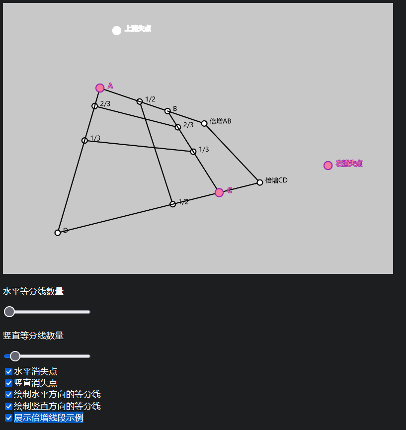

透视中 n 等分点和倍增线段的直接画法
之前学习了任意 n 等分点的画法，该方法虽能绘制任意等分点，但对程序作图不太适合，最近研究发现，其实有一些更直接的方式来找 n 等分点，其不需要做任何辅助线，只需要做测量即可。
n 等分点，倍增线段
直入主题，有这样的结论：
任意指向某消失点的线段，它的 n 等分点的位置仅和线段在画布上的长度，以及线段和消失点在画布上的距离相关。
假设该线段离消失点较远的点和消失点的距离为 a，离消失点较近的点和消失点的距离为 b，则该线段的第 i 个 n 等分点和消失点的距离是：
d(n, i, a, b) = nab / (ia + (n - i)b)
比如，当a = 6，b = 2时，它的 2 等分点距离消失点的距离是 2 * 6 * 2 / (6 + 2) = 3，如下图：

比如，当a = 6，b = 2时，它的三等分点距离消失点的距离分别为 3 * 6 * 2 / (6 + 2 * 2) = 3.6, 3 * 6 * 2 / (2 * 6 + 2) = 2.57，如下图：

倍增线段，假设该线段离消失点较远的点和消失点的距离为 a，离消失点较近的点和消失点的距离为 b，则它的倍增点距离该线段离消失点较远的点的距离为：
1 | |
比如，当a = 5, b = 3时，它的倍增线段距离离消失点较远的点的距离是 (2 * 5 * 5 - 2 * 5 * 3) / (2 * 5 - 3) = 2.85，如下图：

n 等分点代码实现如下：
1 | |
一个交互式示例
下面是一个利用 p5.js 来展示该算法的交互式示例，可以拖动 A，C 点和两个消失点，代码实现就在 html 文件中：


证明
因为画图麻烦所以这里不画图了 w
n 等分点
考虑一个左手坐标系中的三个点 P0，P1，P2，其中P0 = (x, y, z, P1 = (x, y, z + l), P2 = (x, y, z + 2)，相机在原点，viewport 为z=d。
显然，P0，P1，P2 是同一个线段上 3 个点，P1 为 P0P2 的中点。这三个点向相机方向投影，在 viewport 上分别为P0' = (x * d / z, y * d / z, d), P1' = (x * d / (z + l), y * d / (z + l), d), P2' = (x * d / (z + 2l), y * d / (z + 2l), d)。
现在只看 viewport 这个平面，我们要知道二等分点和线段、消失点的关系，就是要看 |P0’O|，|P1’O|，和 |P2’O| 的关系，其中 |P0’O| 和 |P2’O| 对我们是可知的。这三个点显然都在一条斜率等于 y / x 的线性函数上，其中 P0’距原点最远，P2’最近。
我们能得到|P0'O| = (d / z) * sqrt(x^2 + y^2)，|P1'O| = (d / (z + l)) * sqrt(x^2 + y^2)，|P2'O| = (d / (z + 2l)) * sqrt(x^2 + y^2)，不太容易得到的是，|P1'O| = 2 * |P0'O| * |P2'O| / (|P0'O| + |P2'O|)。
再研究三等分点，增加一个点 P3，使用上面相同的方式，研究|P0'O|, |P1'O|, |P3'O|和|P0'O|, |P2'O|, |P3'O|的关系，其中|P0'O| 和 |P3'O| 对我们是可知的，后面的以此类推。
倍增线段
仍旧是像二等分点一样，先三个点 P0，P1，P2，但这次可知的是|P0'O| 和 |P1'O|，需要求得 |P2'O|，这里只需要对上面得到的关系 |P1'O| = 2 * |P0'O| * |P2'O| / (|P0'O| + |P2'O|) 化简一下就能得到结果。
本博客所有文章除特别声明外，均采用 CC BY-NC-SA 4.0 协议 ，转载请注明出处！